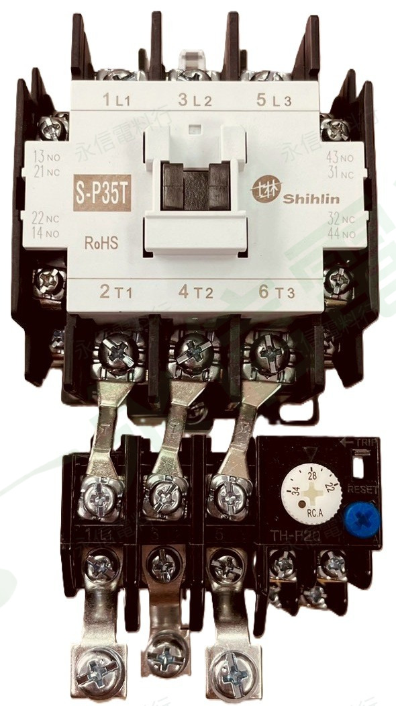

商品照片已套用永信電料行淡綠灰斜向浮水印；點選縮圖可切換角度。

PRODUCT OVERVIEW
商品辨識與核對重點
- 產品類型：MSO-P 系列電磁開關，資料夾標示附 OL。
- 完整型號：MSO-P35T。
- 控制電壓：AC220V。
- 容量與電流標示：7.5HP／21A。
- 輔助接點標示：2a2b。
- 替換核對：建議提供舊品全貌與銘牌照片，並確認現場回路及負載條件。
NAMEPLATE INFORMATION
商品資料整理
品牌士林電機 Shihlin
系列／型號MSO-P35T
組合標示附 OL
容量標示7.5HP
電流標示21A
控制電壓AC220V
輔助接點標示2a2b
商品照片1 張
供應註記實際供應請另行確認
以上內容依你提供的商品照片、資料夾名稱及可辨識標示整理。實際規格請依產品銘牌、原廠型錄及現場需求核對。
VERIFIED SPECIFICATION DATA
規格補充與原廠核對
對應 P 系列接觸器 380V AC-3 額定（系列參考）18.5 kW / 25 HP / 30 A
產品型式MSO-P 開放型電磁開關／磁力啟動組
本頁 OL／HP／控制電壓依實物銘牌與完整商品型號整理
替代比對重點接觸器框架、線圈電壓、積熱電驛範圍、馬達容量、輔助接點
上列 380V AC-3 是對應接觸器系列的原廠額定參考，不等同本件積熱電驛設定值；MSO-P 更換仍須以本頁 OL 電流範圍與控制電壓核對。 系列共通資料僅用於補充辨識，不取代完整型號之原廠規格書與本件實物銘牌。